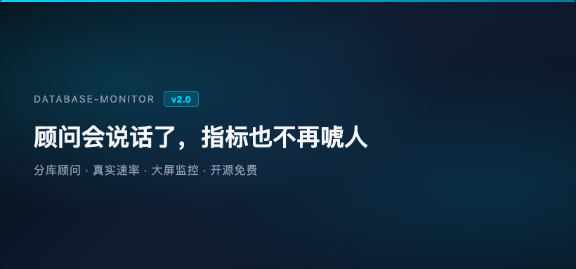
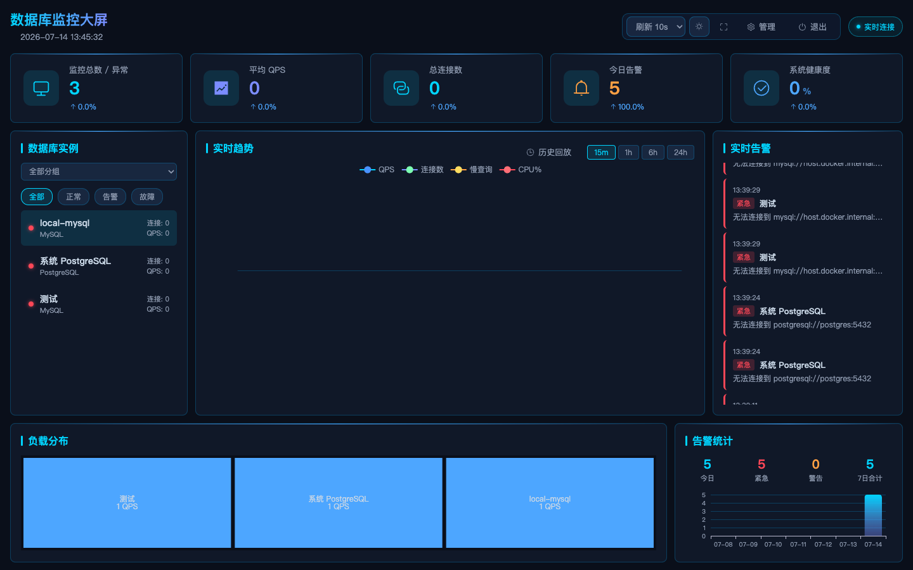
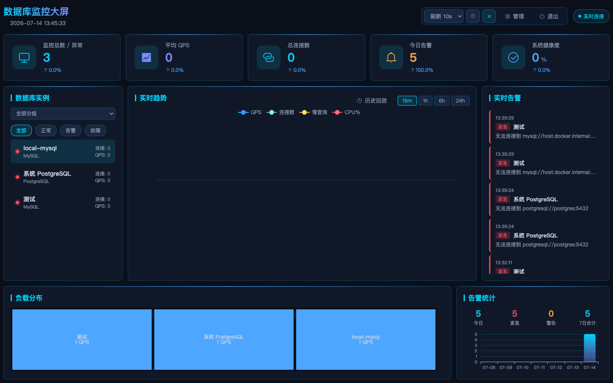
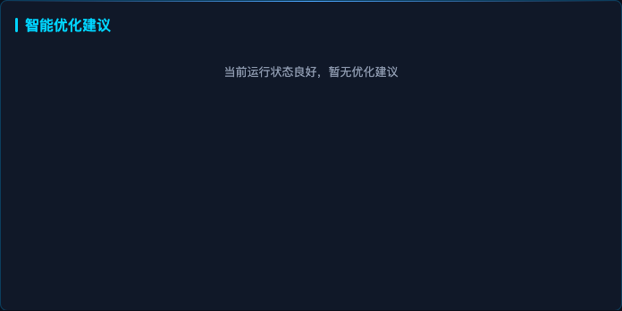
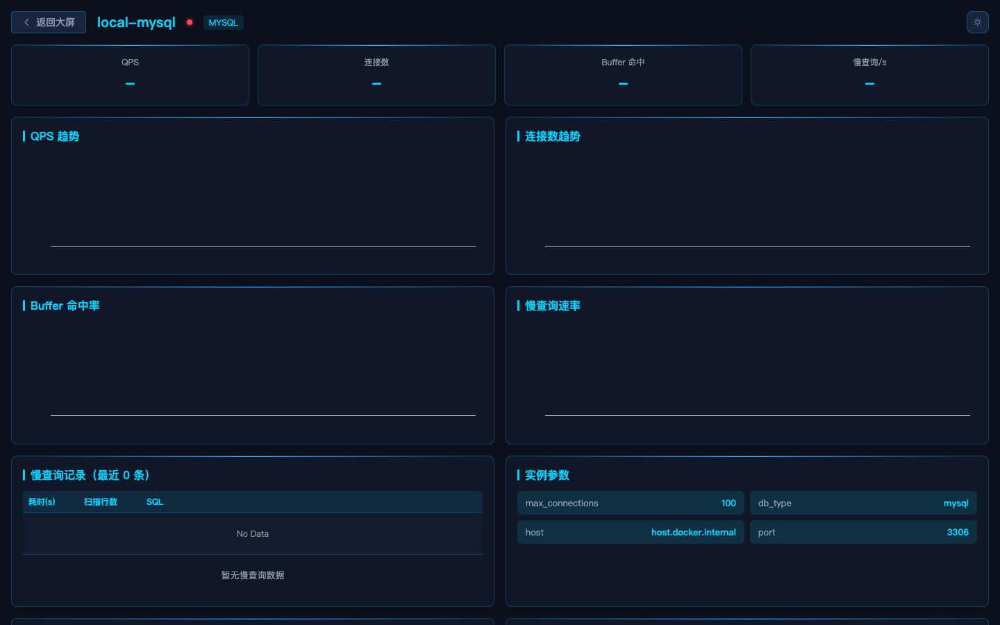
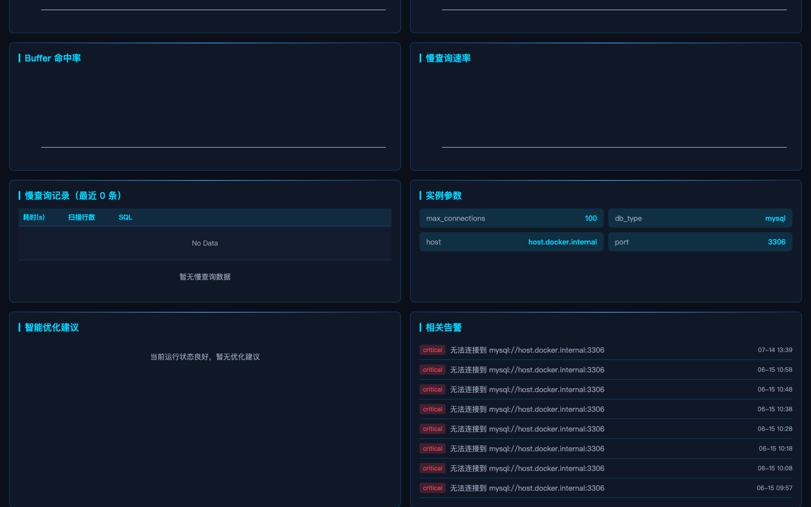
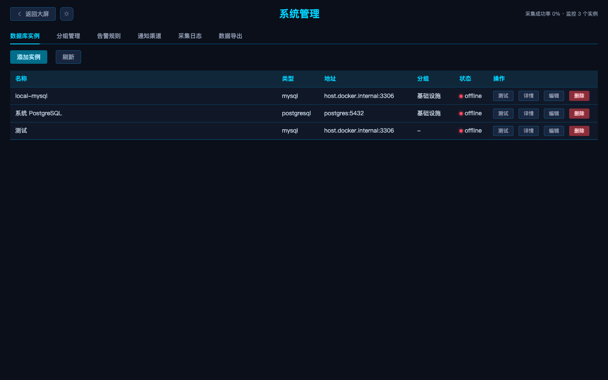
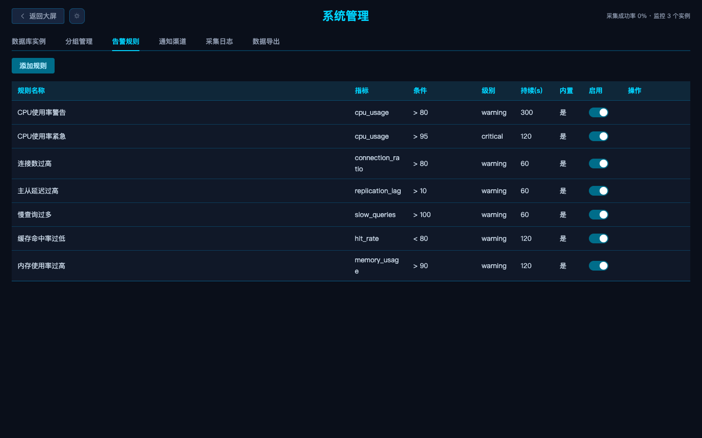
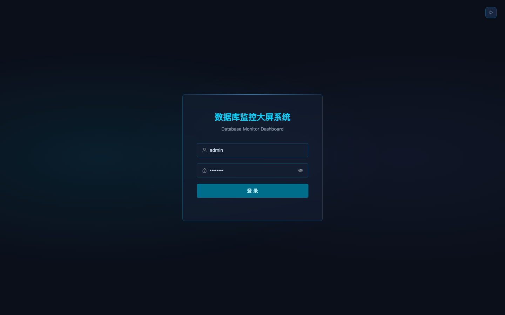

开源推荐 · v2.0 大更新 · 运维干货
Docker 一键部署 · 分库型智能建议 · 删除不再报错

如果你管过几套数据库，大概都经历过这种场面：大屏数字看着热闹，真正出事时却说不清「该先改什么」。v1 能「看见」MySQL / PostgreSQL / Redis / MongoDB；到了 v2.0，我们想把它升级成「看得懂、说得准、用得稳」。
这次更新不是换皮：优化建议从空话变成结构化、分库型顾问；QPS / 慢查询不再拿累计值装瞬间速率；实例删不掉的外键坑也修了。适合扔办公室大屏，也适合开发本机盯库。
项目：database-monitor
版本：2.0.0（MIT 可商用）
GitHub：github.com/MMCISAGOODMAN/database-monitor
一键部署：docker compose up -d
默认访问：http://localhost:8088（admin / admin123）
一、还是那块大屏，先把「一眼看见」做到位
v2 没有扔掉大屏这张王牌：KPI、实例列表、实时趋势、告警滚动、负载分布、近 7 日告警统计，仍然是一屏可读。右上角版本号已经亮到 v2.0.0，WebSocket 实时连接状态也看得见。

▲ 实拍：数据库监控大屏（v2.0.0）
需要投屏汇报时，全屏模式更干净——老板路过会多看两眼那种。

▲ 实拍：全屏模式
二、核心升级：分库型「智能优化建议」
v1 的建议只有三句万能句；v2 换成了顾问引擎：输出带 severity / title / metric / advice 的结构化条目，并按库类型给不同规则——
MySQL：连接比、慢查询速率、InnoDB Buffer 命中、复制延迟
PostgreSQL：缓存命中、死锁、锁等待、临时文件
Redis：命中率、内存占用、阻塞客户端、bgsave 失败
MongoDB：队列积压、缺页、副本状态
健康时坦然告诉你「暂无优化建议」；异常时则给出等级和可执行动作。告警里的根因分析，也复用同一套顾问逻辑，避免「大屏一套话、告警另一套话」。

▲ 实拍：详情页「智能优化建议」模块
三、指标说人话：差分速率 + 按库型看数
以前有人会被「假 QPS」骗到：MySQL 的 Questions、慢查询计数是累计值，直接当速率看只会越看越大。v2 用两次采集差分（首采用 uptime 近似）产出真实速率；max_connections 也改成读 @@global.max_connections，连接比告警终于和配置对得上。
详情页也按 db_type 换卡片：MySQL 强调 Buffer 命中与慢查询/s；Redis 会切到命中率、内存；PostgreSQL 会突出缓存命中与死锁。页面约 15 秒自动刷新，不用一直手搓 F5。

▲ 实拍：MySQL 详情（类型化 KPI + 趋势）

▲ 实拍：详情下半屏——慢查询 / 参数 / 建议 / 相关告警
四、用得更稳：管理、告警规则、删除终于顺手了
管理页依然是实例、分组、规则、渠道、采集日志、导出一站搞定。v2 里大家吐槽最多的一个坑——自己加的实例删不掉（被告警外键卡住）——已修：删除前先清理关联告警与实例级规则。

▲ 实拍：系统管理 · 数据库实例

▲ 实拍：内置 / 自定义告警规则
另外，WebSocket 改成指数退避重连，断网抖动时不会雪崩式刷连接；登录页开箱即用，深浅色也能切。

▲ 实拍：登录页
五、谁适合升级？三步就能跑起来
✅ 运维：办公室 / NOC 投屏，连接失败和突发告警第一时间看见
✅ 后端：本地 Docker 顺手盯 MySQL / Redis，详情里看建议
✅ 小团队：MIT 开源可商用，比从零拼 Grafana 面板快
部署（仓库根目录）
git clone https://github.com/MMCISAGOODMAN/database-monitor.git
cd database-monitor
docker compose up -d
# 浏览器打开 http://localhost:8088
Docker 里访问宿主机数据库，主机请填 host.docker.internal，别写 127.0.0.1——这个坑踩一次就记住了。
写在最后
v2.0 想完成的跃迁很简单：从「数字好看」到「建议可用」，从「计数吓人」到「速率可信」，从「删库报错」到「管理顺手」。项目仍完全开源，欢迎 Star、提 Issue、提 PR。
仓库地址：github.com/MMCISAGOODMAN/database-monitor
觉得有用？帮个忙再走
点个「在看」，转给还在一台台登库的同事
顺手点赞 + 星标，作者会更有动力继续更新
回复关键词 「监控」，领取 v2 部署与截图清单
公众号二维码
请替换
长按识别二维码，关注后不迷路
— END —